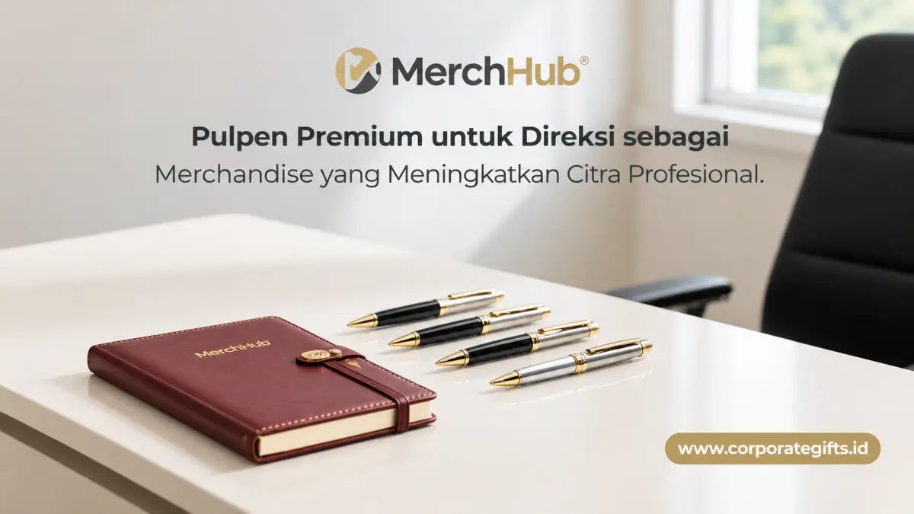

Corporate Gifts ID - Pulpen premium untuk direksi adalah kategori corporate gift eksekutif yang menggabungkan material berkualitas tinggi seperti logam kuningan tebal, kayu solid alami, atau resin mewah dengan personalisasi grafir nama dan logo korporasi. Cinderamata prestisius ini biasa dipilih untuk momentum formal seperti pelantikan jabatan, rapat umum pemegang saham (RUPS), penandatanganan nota kesepahaman (MoU), atau apresiasi purna tugas dewan direksi.
Di pasar pengadaan korporat Indonesia pada 2026, harga pulpen souvenir kantor premium berkisar dari ratusan ribu hingga jutaan rupiah per unit, tergantung pada komposisi bahan, jenis mata pena (rollerball / fountain pen), dan tingkat kerumitan kustomisasi kemasan yang dipilih.
Poin Kunci Pulpen Premium Direksi:
- Simbol Otoritas: Pulpen menjadi instrumen penentu keputusan strategis dan tanda tangan kesepakatan bisnis penting.
- Personalisasi Eksklusif: Grafir laser nama dan inisial direksi menghadirkan rasa penghargaan personal yang mendalam.
- Material Unggul: Kombinasi logam, kayu eboni/rosewood, serta resin berbobot mantap mencerminkan kemapanan kepemimpinan.
- Presentasi Sempurna: Kemasan kotak kayu berlapis beludru atau hardbox magnetik menyempurnakan pengalaman seremonial serah terima.
Mengapa Pulpen Premium Cocok untuk Direksi Perusahaan?
Pulpen eksklusif adalah instrumen kerja yang selalu hadir di setiap momen krusial pimpinan perusahaan, mulai dari penandatanganan dokumen legal, persetujuan anggaran tahunan, hingga kesepakatan merger dan akuisisi bisnis.
Karena posisinya yang lekat dengan keputusan strategis, pulpen berkualitas tinggi dipandang sebagai hadiah yang sarat makna simbolik bagi seorang pemimpin institusi.
1. Apa yang Membuat Pulpen Berbeda dari Merchandise Biasa?
Pulpen logam berdesain minimalis dan berbobot ergonomis melambangkan ketegasan, presisi, dan wibawa dalam bertindak.
Bagi jajaran direksi, citra profesionalitas adalah aset fundamental. Menggunakan pulpen bermutu tinggi di ruang rapat maupun forum konferensi memperkuat reputasi kepemimpinan di hadapan mitra bisnis dan jajaran manajemen.
2. Bagaimana Pulpen Membawa Nilai Simbolik bagi Penerimanya?
Pulpen berbalut gravir nama atau inisial resmi menunjukkan perhatian mendalam terhadap detail dan apresiasi tulus atas kontribusi individu. Detail personalisasi semacam ini secara tegas membedakan pulpen premium dari barang cinderamata massal biasa.
Material Apa yang Membentuk Karakter Pulpen Eksekutif?
Karakter fisik material sangat menentukan bobot mantap genggaman, kehalusan aliran tinta, serta daya tahan produk selama bertahun-tahun penggunaan:
Pilihan Material Pulpen untuk Direksi:
- Logam Stainless Steel & Kuningan (Brass): Menampilkan kesan modern, kokoh, dan presisi tinggi dengan bobot mantap saat digoreskan.
- Kayu Solid Alami (Rosewood & Ebony): Cocok untuk pemimpin yang mengagumi estetika klasik, hangat, dan sentuhan kriya bernilai seni tinggi.
- Resin Polimer Mewah: Menawarkan kilau permukaan yang sangat halus dan ringan dengan pilihan corak marmer kontemporer.
- Lapisan Emas & Perak Plated: Memberikan kilau prestise maksimal yang melambangkan pencapaian puncak karier eksekutif.

Perpaduan pulpen premium beraksen chrome dan buku agenda bersampul kulit PU mewah sebagai set cinderamata direksi berkelas.
Tabel Perbandingan Material Pulpen Eksekutif
Gunakan matriks perbandingan material berikut untuk menentukan karakteristik pulpen yang paling selaras dengan profil pimpinan instansi Anda:
| Material Utama | Karakteristik Fisik | Kesan Visual & Filosofi | Rekomendasi Acara |
|---|---|---|---|
| Logam (Brass / Stainless Steel) | Kuat, tahan gores, bobot ergonomis mantap | Modern, tegas, dan profesional | Penandatanganan MoU & RUPS tahunan |
| Kayu Solid (Ebony / Rosewood) | Tekstur serat alami, hangat dalam genggaman | Klasik, bijaksana, dan elegan | Apresiasi purna tugas & anniversary perusahaan |
| Resin Eksklusif | Permukaan ultra-smooth, variasi warna marmer | Kontemporer, dinamis, dan mewah | Pelantikan direksi muda & startup founder |
| Gold / Silver Plated | Aksen kilau logam mulia, lapisan anti-korosi | Prestise tinggi, eksklusif, dan luxury | Penghargaan lifetime achievement dewan komisaris |
Bagaimana Personalisasi Meningkatkan Nilai Corporate Gift?
Personalisasi adalah elemen kunci yang mengubah pulpen berkualitas dari sekadar alat tulis biasa menjadi karya seni berharga dengan ikatan emosional mendalam.
Beberapa teknik personalisasi presisi yang dapat diaplikasikan:
- Grafir Laser Nama & Inisial: Mengukir nama lengkap beserta gelar atau jabatan direksi pada badan pulpen secara permanen.
- Logo Perusahaan Minimalis: Menyematkan logo korporat pada bagian klip penutup dengan proporsi yang proporsional dan tidak mencolok.
- Custom Packaging Emboss: Menghadirkan logo perusahaan berlapis foil emas atau perak pada tutup kotak kemasan.
- Sertifikat Autentikasi: Menyertakan kartu jaminan kualitas dan pesan apresiasi tertulis resmi dari jajaran direksi.
Kemasan Seperti Apa yang Melengkapi Kesan Premium?
Kemasan luar adalah pintu masuk pengalaman pertama saat penerima membuka hadiah. Kemasan yang dirancang apik mencerminkan standar profesionalisme tinggi institusi Anda:
- Kotak Kayu Solid dengan Lapisan Satin: Memberikan nuansa seremonial mewah saat dibuka di atas panggung acara.
- Hardbox Magnetik Kulit Sintetis: Menghadirkan kesan modern, minimalis, dan praktis untuk diletakkan di ruang kerja kantor.
- Pouch Suede Beludru: Melindungi badan pulpen dari gesekan saat dibawa bepergian dalam tas kerja.
Bagaimana Pulpen Premium Berperan dalam Strategi Branding Perusahaan?
Menghadirkan souvenir custom premium untuk dewan direksi bukan sekadar tradisi seremonial, melainkan bagian dari strategi branding relasional jangka panjang korporasi.
1. Apakah Pulpen Premium Memperkuat Citra Korporat?
Cinderamata dengan mutu pengerjaan prima merefleksikan nilai fundamental perusahaan yang senantiasa menjunjung integritas dan kualitas terbaik di setiap lini operasional.
2. Apakah Pulpen Bisa Menjadi Bagian dari Executive Gift Set?
Sangat bisa. Pulpen premium kerap dikombinasikan bersama buku agenda kulit PU eksklusif, dompet kartu nama kulit, powerbank nirkabel, dan vacuum tumbler SUS304 untuk membentuk satu kesatuan Executive Director Gift Set yang utuh dan mewah.
Kesimpulan dan Panduan Pengadaan
Pulpen premium untuk direksi adalah investasi cinderamata yang memperkuat ikatan kemitraan, mengukuhkan otoritas kepemimpinan, dan membangun reputasi brand yang elegan di hadapan para pemangku kepentingan.
Konsultasikan kebutuhan pengadaan pulpen eksekutif dan paket gift set direksi perusahaan Anda bersama tim spesialis kami di layanan pengadaan souvenir kantor CorporateGifts.ID. Dapatkan penawaran harga resmi, katalog produk terlengkap, dan sampel visual mockup gratis hari ini juga.